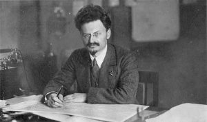

Quintus can be found at qcurtius.com. He is the author of the books On Duties, Thirty Seven, Sallust: The Conspiracy Of Catiline And The War Of Jugurtha, and other books. His work has been reviewed at Taki's Magazine. He can be followed on Twitter


For a time in the 1920s Leon Trotsky was second in importance in Soviet Russia only to Lenin himself. Many believed him to be the natural choice to succeed Lenin. But it was not to be; in the Byzantine power struggles that characterized Soviet politics, Trotsky would prove to be an amateur. His personality—arrogant, dismissive, and lacking in tact and forbearance—would ensure that few voices were raised in his defense as Stalin slowly put him in a vice. Trotsky was eventually stripped of his posts and forced into internal exile; he would eventually have to flee the country.
It was a stunning reversal. Trotsky found his way to Mexico City and tried—pathetically, as it turned out—to lead an opposition movement in exile against Stalin. The Communist world in the 1930s was fractured into two camps: those who followed the party line from Moscow, and those “Trotskyists” who placed their sympathies with the exile in Mexico City. And as the shadow of world war loomed in the late 1930s, this situation became intolerable for Joseph Stalin. As the Kremlin saw it, Trotsky was dividing the socialist camp at a time when it faced existential threats (i.e., Germany, Japan, and the West in general). When the secretive Stalin also learned that Trotsky was writing a biography of him, he was enraged and became obsessed with eliminating him.

This dirty job was assigned to Pavel A. Sudoplatov, the intelligence specialist who worked with Levrenti Beria in a secret division called the “Administration for Special Tasks.” Sudoplatov would later write a memoir called Special Tasks, which served as the primary source of this article. One day in March 1939, he was summoned to see Stalin and Beria in the Kremlin. Stalin made it clear to him that it would be his job to eliminate Trotsky:
“There are no important political figures in the Trotskyite movement except Trotsky himself. If Trotsky is finished the threat will be eliminated,” Stalin said, and returned to his seat opposite us. Then slowly he began to speak of his dissatisfaction with the present state of our intelligence operations, which he said were not active enough. Stalin stressed that the elimination of Trotsky had first been assigned to [another operative] in 1937, but he had failed to fulfill this important government mission.
Sudoplatov thus had his marching orders; he was not sure he was the right man for the job, as he spoke no Spanish and knew nothing about Mexico. But Stalin waved his concerns aside. “It is your job and party duty to find and select suitable and reliable personnel to carry out the assignment. You will be provided with whatever assistance and support you need. Report directly to Comrade Beria and nobody else, but the full responsibility for carrying out the mission remains with you.” On this ominous note, the meeting ended.
Sudoplatov assembled a team of agents, many of whom were former communist fighters of the Spanish Civil War. An earlier clumsy attempt to kill Trotsky by raking his villa with gunfire had failed, and had made him exceedingly cautious in his dealings with anyone he was not familiar with. The assassin finally selected was a charming and good-looking businessman named Ramon Mercader; his mother was also a devoted communist who had fought in Spain. Mercader slowly infiltrated himself into Trotsky’s inner circle by posing as an eccentric who liked being around excitement and danger. He also had a romantic involvement with a woman named Sylvia Ageloff, who was well-known in Trotsky’s circle. In this way he was able to gain access to his residence.
Ramon Mercader
On August 20, 1940, Mercader was able to arrange a private meeting with Trotsky. Under his coat he had secreted a mountain-climbing ice axe for use as the murder weapon. As Trotsky was bent over his desk studying a document Mercader showed him, the assassin pulled out the axe and brought it down on Trotsky’s head. According to Sudoplatov (who heard Mercader’s story in person in the 1960s), Trotsky moved his head at the last moment and the blow was slightly deflected. Seriously wounded, he began to scream for help and tried to wrestle the assassin to the ground.
The murder weapon
Guards poured into the room and immobilized Mercader; he was nearly killed by the guards but Trotsky told them to spare his life. The assassin’s mother, Caridad Mercader, was waiting for her son in the getaway car outside the villa; when he did not appear, she fled the country. Trotsky died the next day after sustaining severe head injuries. Mercader was arrested by Mexican police under a false name (Frank Jacson); his real identity would not be known for another six years. The only reason his real name became known was because one of Mercader’s relatives defected to the West from the Soviet Union and revealed the information (his mother Caridad had actually revealed it to the relative, believing the secret was safe).
Mercader claimed that Mexican police beat him nearly every day for years; yet he kept to his cover story, which was that he had killed Trotsky as the result of a personal dispute. The Mexican authorities would eventually sentence him to 20 years in prison, almost all of which he served. On his release in 1960 he first went to Cuba and from there to the Soviet Union, where he would be honored with the country’s highest decoration, the Hero of the Soviet Union.
Here ends the grisly story. While no one celebrates the death of another, it is difficult to find much sympathy for a man like Trotsky, who bore much responsibility for unleashing communism on Russia and then the world. Stalin himself was certainly no hero. But perhaps there is crude justice in the fact that Trotsky was done to death by the same types of fanatics that he himself had created and nurtured during his long and bloody tenure as head of the Red Army in the 1920s.
Read More: What We Must Learn From The Hungarian Communist Revolution Of 1919